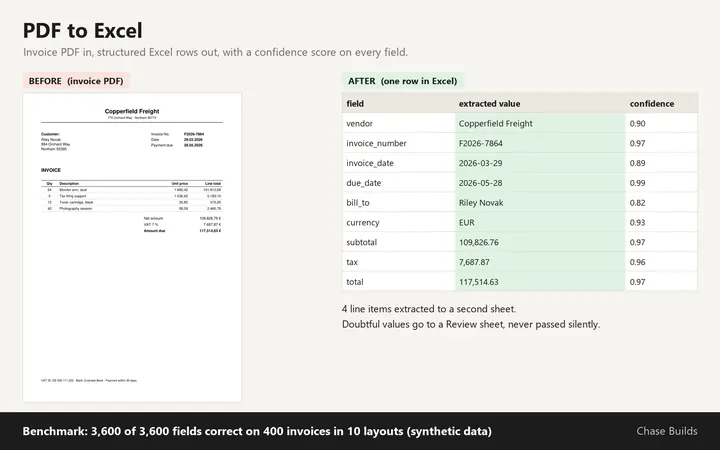
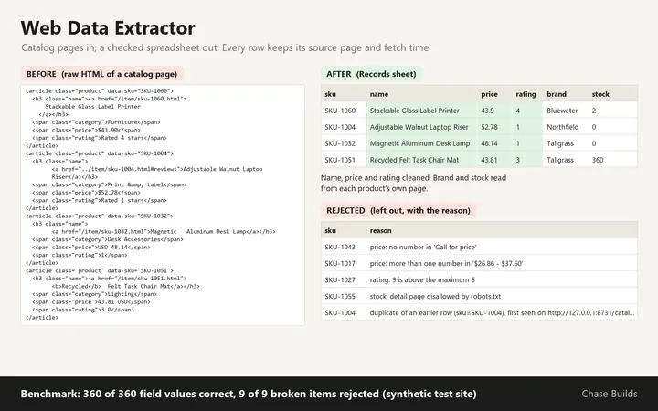
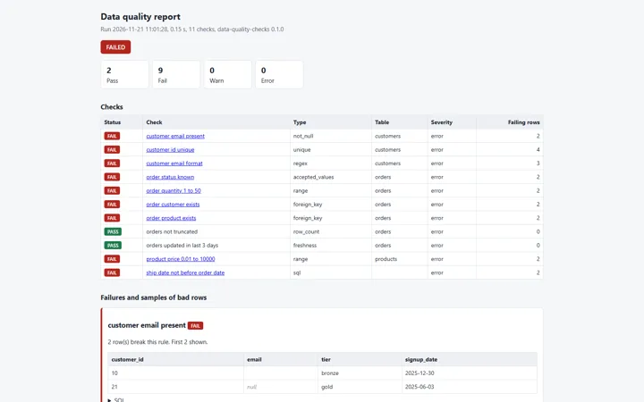
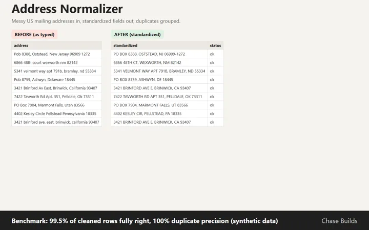

pdf-to-excel
Invoice PDFs to one Excel workbook, with a confidence score on every field.
Measured3,600 of 3,600 fields correct on 400 invoices in 10 layouts.
Small Python tools for messy business data: spreadsheets, PDFs, customer lists and weekly reports.
Each tool is scored against generated test data where the right answer is known. When a tool is not sure, it sends the value to a review sheet instead of guessing.
Each card shows a before and after. Tap an image to open it full size.

Invoice PDFs to one Excel workbook, with a confidence score on every field.
Measured3,600 of 3,600 fields correct on 400 invoices in 10 layouts.

Cleans messy CSV and Excel files and logs every change on an audit sheet.
Measured5,615 of 5,627 fixable errors fixed, 611 of 611 unsafe values flagged.

Merges customer lists with different columns into one record per customer.
Measured28,512 rows from 5 files with 0 false merges.

Raw weekly exports to a finished Excel report and HTML dashboard.
Measured876 of 876 KPI values exact, 17 of 18 planted faults caught.

Company names to a research sheet where every fact has a source.
Measured99.4% match precision on 300 test companies.

Public catalog pages to a checked spreadsheet, only where robots.txt allows.
Measured360 of 360 field values correct on the test site.

Declarative checks for CSV, Excel and Parquet files, run as DuckDB SQL, with a pass/fail report.
Measured1,784 of 1,800 planted faults caught, 0 false alarms in 220 clean runs.

Tables from digital PDFs to clean Excel and CSV, stitched across pages, with a totals check on every table.
Measured38,528 of 38,968 cells exact, 240 of 240 tables found.

Messy US mailing addresses to standardized, split fields, with duplicates grouped.
Measured99.5% of cleaned rows fully right, 100% duplicate precision.
Load CSV and Excel into SQL with type inference and a load report.
Measured2,000 of 2,000 columns typed correctly.
Compare two versions of a spreadsheet, cell by cell.
Measured2,803 of 2,803 planted edits found, 0 false flags.
Match products between two lists by SKU, units and fuzzy names.
Measured2,216 of 2,216 automatic matches correct.
Nested JSON to tidy related tables in Excel, CSV or SQLite.
Measured426,604 of 426,604 values placed exactly once.
Offline quality checks for B2B contact lists.
Measured1,531 of 1,531 planted faults caught.
The same four rules apply to every tool.
BENCHMARK.md and LIMITATIONS.md).Work I take on.